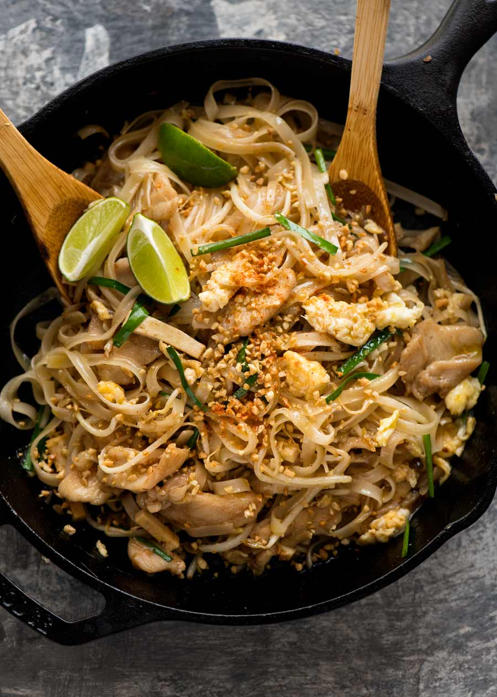

Odin Pad Thai
Ingredients
- 125g/4oz Dried Rice noodles
Sauce:
- 1 1/2 tbsp tamarid puree
- 3 tbsp (packed) brown sugar
- 2 tbsp fish sauce
- 1 1/2 tbsp oyster sauce
Stir Fry:
- 2 - 3 tbsp vegetable or canola oil
- 1/2 onion , sliced
- 2 garlic cloves , finely chopped
- 150 g/5oz chicken breast (or thigh) , thinly sliced
- 2 eggs , lightly whisked
- 1 1/2 cups of beansprouts
- 1/2 cup firm tofu, cut into 3cm / 1 1/4″ batons
- 1/4 cup garlic chives , cut into 3cm / 1 1/4″ pieces
- 1/4 cup finely chopped peanuts
For Serving:
- Lime wedges
- Ground chilli or cayenne pepper (optional)
- More beansprouts
Instructions
- Place noodles in a large bowl, pour over plenty of boiling water. Soak for 5 minutes, then drain in a colander and quickly rinse under cold water. Don't leave them sitting around for more than 5 - 10 minutes.
- Mix Sauce in small bowl.
- Heat 2 tbsp oil in a large non stick pan (or well seasoned skillet) over high heat. Add garlic and onion, cook for 30 seconds.
- Add chicken and cook for 1 1/2 minutes until mostly cooked through.
- Push to one side of the pan, pour egg in on the other side. Scramble using the wooden spoon (add touch of extra oil if pan is too dry), then mix into chicken.
- Add bean sprouts, tofu, noodles then Sauce.
- Toss gently for about 1 1/2 minutes until Sauce is absorbed by the noodles.
- Add garlic chives and half the peanuts. Toss through quickly then remove from heat.
- Serve immediately, sprinkled with remaining peanuts and lime wedges on the side, with a sprinkle of chilli and a handful of extra beansprouts on the side if desired (this is the Thai way!). Squeeze over lime juice to taste before eating.
